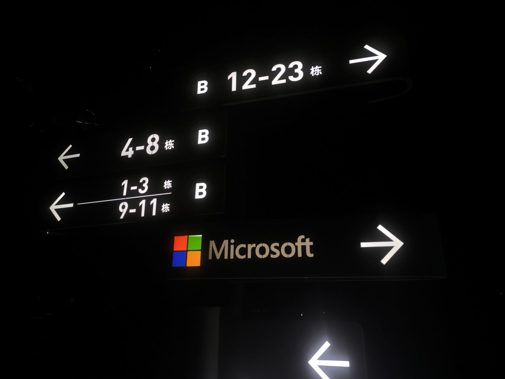

想要跳舞，想要唱歌，于是鬼节刚到，我就出门了。
凌晨一点外面的街道依然全是小吃摊，我来来回回转了半个多小时。
两点钟左右，我来到了那片草地，耳机里开始播放极度躁动的摇滚歌曲。
我的身体不自觉地跟着律动起伏，捡到一根木棍，于是我挥舞着木棍开始跳舞乱蹦。
三点多，我蹦累了，开始思考人生的意义，显然我不知道。
然后回家睡觉了。
十一点多起床，大杰老师叫我出门，他要学习撩妹。
我中午自己炒了菜，西红柿炒鸡蛋和炒茄子。
没法做米饭，做了白面条，但是太少了。
下午我们在商场逛了四五个小时，直到七点，我们从楼上到楼下来来回回，他还没鼓起勇气。
然后我们去了萨莉亚，我们是穷鬼。
被萨莉亚店长赶走了。
然后去看了微软，才八点楼居然已经黑了。我希望我能去那里工作。
我又看了附近的几所大学，可惜没有一所是我的容身之所。
30000步。
